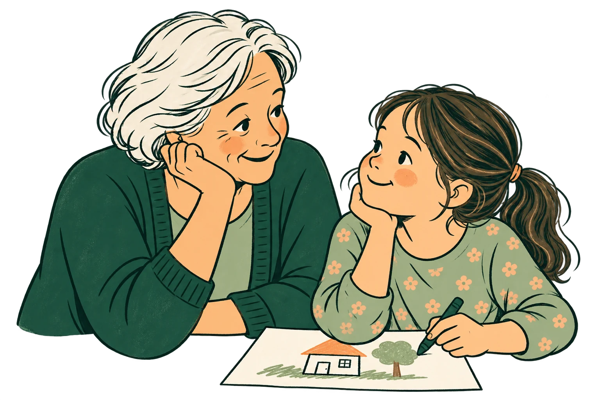

עצמאות קטנה. קשר גדול.
הילדים מדברים.
אתם בוחרים.
הילדים מתכתבים בשיחות ובקבוצות שאישרתם, דרך חשבון ה־WhatsApp של ההורה.
מתקינים במחשב בבית. הילדים נכנסים מהדפדפן.

איך זה עובד
מחברים פעם אחת את הוואטסאפ שלכם ליחד
סבתא שולחת תמונה לקבוצה בוואטסאפ
יחד מעביר אותה לטאבלט של נועה
שיחה פרטית לא עוברת
אתם בוחרים אילו קבוצות נועה רואה
לנועה יש כניסה אישית משלה
היא עונה, וסבתא מקבלת בוואטסאפ
גם לזמן יש מקום.
מכסת זמן יומית לכל ילד, ואפשרות להוסיף זמן לפי הצורך.
לפני שמתחילים
כמה דברים
שחשוב לדעת.
האם לילד צריך להיות חשבון WhatsApp?+
לא נדרש חשבון נפרד לילד לצורך ההתכתבות דרך יחד. ההודעות נשלחות מהחשבון של ההורה וכוללות את שם הילד.
האם הילד רואה את כל השיחות שלי?+
לא. אתם בוחרים אילו שיחות וקבוצות זמינות בממשק של יחד, ויכולים לבטל את הגישה.
איך הילדים משתמשים ביחד?+
פותחים את יחד בדפדפן במחשב או בטאבלט. לשימוש בטאבלט, בוחרים בהתקנה „גם ברשת הביתית” ועוקבים אחר הוראות החיבור במכשיר. המחשב שעליו הותקנה יחד צריך להישאר דולק.
אפשר להגדיר זמן שונה לכל ילד?+
כן. יחד כוללת מכסות יומיות גמישות, הצגת הזמן שנותר ואפשרות להורה להאריך.
האם יחד היא מוצר של WhatsApp?+
לא. יחד היא אפליקציה נפרדת, ואינה מוצר רשמי של WhatsApp או Meta. החיבור ל־WhatsApp אינו רשמי: הוא עלול להפסיק לעבוד או להוביל להגבלת חשבון ההורה. חשוב לקחת זאת בחשבון לפני שמחברים חשבון.
הורדה
מתקינים ומתחילים.
מורידים את המתקין למחשב בבית. בסיום ההתקנה נפתח הדפדפן, ושם יוצרים את חשבון ההורה ומגדירים גישה לילדים.
Windows
הקובץ עדיין לא חתום, ולכן Windows עשוי להציג אזהרה. לוחצים „מידע נוסף” (More info) ואז „הפעל בכל זאת” (Run anyway), ומאשרים את חלון ההרשאות.
הורדה ל־WindowsLinux
בהכנה. ההורדה תיפתח כשהקובץ יהיה מוכן וייבדק.